🏗️ 전체 시스템 아키텍처
SEPilot Desktop은 Electron과 Next.js를 기반으로 구축된 데스크톱 애플리케이션입니다. Frontend는 React + Next.js로 UI를 렌더링하고, Backend는 Electron Main Process에서 파일 시스템, 데이터베이스, LLM API 등을 처리합니다.

📌 핵심 특징
- Frontend: Next.js 14 (App Router), React 19, Tailwind CSS, shadcn/ui
- Backend: Electron 31, Node.js 18+, TypeScript 5.4
- 통신: IPC (Inter-Process Communication) via Context Bridge
- 데이터베이스: better-sqlite3 (Chat History), SQLite-vec (RAG)
- AI/ML: LangGraph, MCP (Model Context Protocol), OpenAI Compatible API
📝 다음 단계
이 문서는 SVG 이미지 기반으로 작성되었습니다. 모든 다이어그램이 정상적으로 표시되는지 확인해주세요.